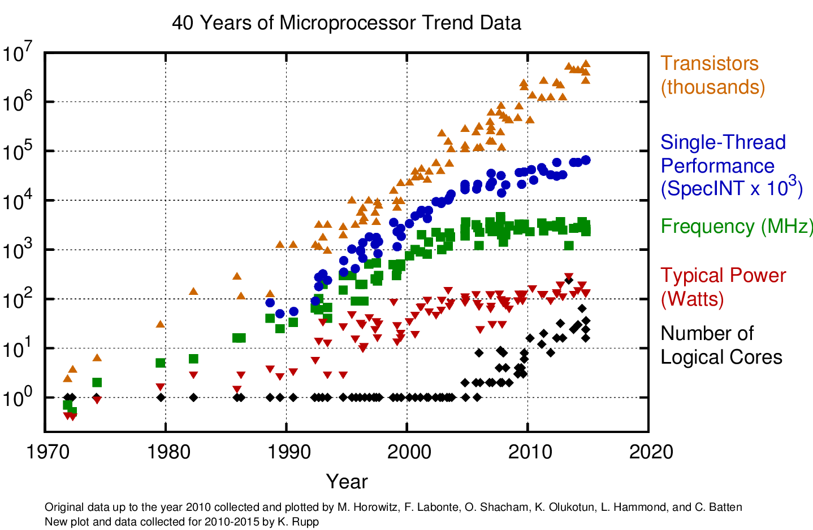

Scalability is the capability of a system, network, or process to handle a growing amount of work, or its potential to be enlarged to accommodate that growth. For example, a system is considered scalable if it is capable of increasing
its total output under an increased load when resources (typically hardware) are added.
Properties of a system
Scalable: a system whose performance improves after adding hardware, proportionally to the capacity added.
Resilient or graceful degration: a resilient control system is one that maintains state awareness and an accepted level of operational normalcy in response to disturbances.
Distributed: a distributed system is a model in which components located on networked computers communicate and coordinate their actions by passing messages.
Distributed systems, degrees of parallelism.
We can design our application:
To be executed concurrently.
Parallely.
Distributedly.
Evolution of CPU processors

Evolution of available RAM memory
Evolution of Global IP traffic
Where we deploy applications?
On premise, bare metal.
Public cloud, AWS
Public cloud, GCP
Public cloud, Azure
Public cloud, Heroku
Private cloud, OpenStack
Private cloud, VSphere
Mesos/Marathon/DCOS
Kubernetes
Nomad
Titus
Cloud timeline
What we deploy?
Virtual Machines.
Containers.
code
Disgression: what is a container?
How we deploy?
Snowflake servers: an operator copies code in the server and install it and restart services manually.
With config management: using config management tools like Puppet, Ansible, SaltStack, Chef, Juju we get PhoenixServers.
Using immutable infrastructure (golden image): we create an artifact that is never modified while being promoted or deployed between environments.
How we organize deployments?
Deployment day!: after QA there is a date at someone, not the developers manages the deployment.
Continuous deployment/delivery: there is an automated process (a pipeline) that fetch the source code from a commit event, builds it, test it and deploy it.
How we shift traffic between new deployment and old deployment?
Highlander:
red/black or blue/green:
Rolling upgrade:
Canary release:
How we organize deployments?
Deployment day!: after QA there is a date at someone, not the developers manages the deployment.
Continuous deployment/delivery: there is an automated process (a pipeline) that fetch the source code from a commit event, builds it, test it and deploy it.
How to ship applications?Distributed systems?Monoliths versus MicroservicesCloud optionsk8s primerOur case, let's build an url shortenerSome problems appearsLets fix itAbout loadbalancingAbout config management12 factor chapaExplaining our build environment and workflowPlay and deploycurrent shortcomings of our architecture.Autoscaling.Metrics.Service discovery options pros and cons.circuit breaker pattern.We can do betterScaling the DBObservabilityChaos engineering, prepare for the worst.SLA/SLI/SLOSome architectures